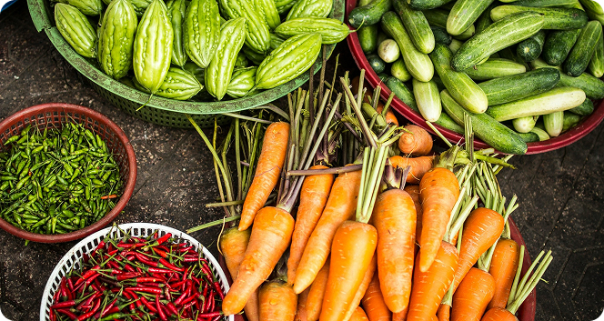

Ingredientes frescos
da fazenda para o seu estabelecimento
Conectamos seu estabelecimento aos melhores produtores rurais da região. Tenha acesso a um catálogo variado de produtos frescos, negocie diretamente e simplifique sua logística de compras.

Menos distância,
mais parceria.
Para o seu restaurante a Semear é a ponte até os produtores locais que valorizam a qualidade. Converse diretamente com quem planta, conheça a origem dos seus ingredientes e fortaleça a comunidade.
Para você, produtor, é a chance de ir além. Apresente seus produtos para os melhores restaurantes da região e veja seu trabalho ser mais valorizado, sem atravessadores.